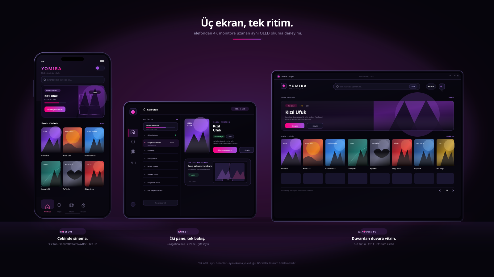
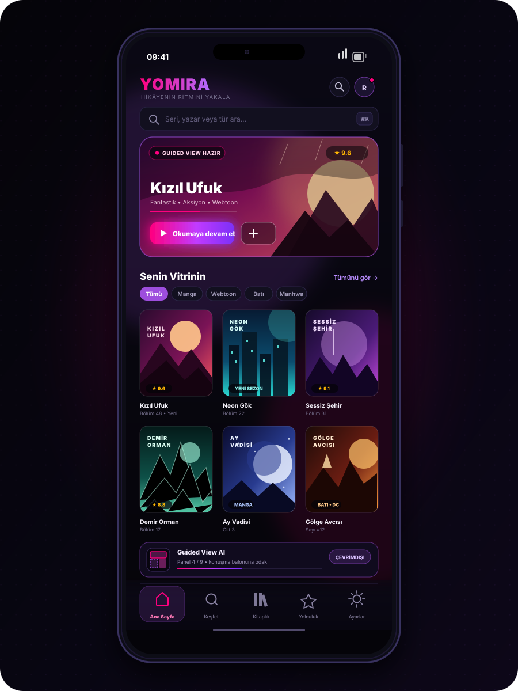
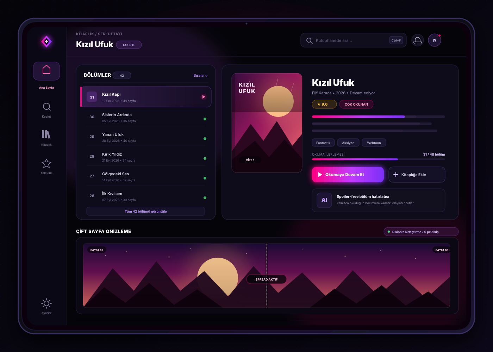
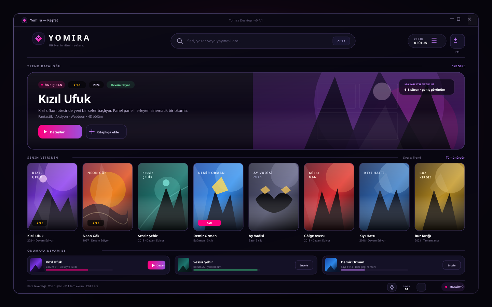

✨ Son sürüm v0.4.1•Android & Windows•100% Açık Kaynak
Bir panel daha. Bir dünya daha.
Manga, webtoon ve Batı çizgi romanları için açık kaynak okuyucu. Telefondan 4K monitöre: Guided View akıllı panel takibi, Yomira Reading Journey başarımları ve Wrapped özetleriyle okumaya odaklan. Türkçe / English, senin seçimin.
Başlat menüsü kısayollu resmî kurulum; kaldırma kaydı ve sürüm yükseltmesi Windows tarafından yönetilir.
Minimum sistem: Android 8.0+ (API 26+) · Windows 10/11. Dosya bütünlüğünü sürümle yayınlanan SHA256SUMS.txt ile doğrulayabilirsin. Telefon ve tablet için ayrı APK gerekmez.
Cihaz arayüz vitrini
Üç ekran, üç kusursuz deneyim.


📱 Telefon
yomira-v0.4.1.apk
2 / 3 / 4 sütun arasında tek dokunuşla geçiş
YomiraBottomNavBar: Ana Sayfa, Keşfet, Kitaplık, Yolculuk, Ayarlar
Guided View AI şeridi: panel ilerlemesi ve çevrimdışı odaklanma
Kaldığın bölümü hatırlayan “Okumaya devam et” kartı

📟 Tablet & katlanabilir
yomira-v0.4.1.apk — aynı evrensel dosya
Sol Navigation Rail ile geniş ekranda tam yer kullanımı
2-Pane detay: bölüm listesi + kapak, künye ve ilerleme
Çift Sayfa Spread önizlemesi — 0 px dikiş
Spoiler-free bölüm hatırlatıcı kartı

🖥️ Windows masaüstü
Yomira-0.4.1.exe · Yomira-0.4.1.msi
2K/4K monitörlerde 6–8 sütunlu dev poster ızgarası
Ctrl+F ile anında arama, F11 ile tam ekran
Fare tekerleği ve yön tuşlarıyla webtoon kaydırma
Reading Journey seviye, XP ve haftalık özet
Tasarım önizlemeleri; görünüm cihaz ve sürüme göre değişebilir.
Tek ekosistem
Her ekranda aynı ritim.
📱
Telefon — dikey okuma
Alt gezinme çubuğu, 2–3 sütunlu poster rafları ve tek elle ulaşılabilen denetimler. Guided View panel şeridi okuma sırasında ilerlemeyi gösterir.
yomira-v0.4.1.apk
📟
Tablet 2-Pane — geniş tuval
Tek evrensel APK ekranı algılar; sol Navigation Rail ve iki panelli detay düzenine kendiliğinden geçer. Bölüm listesi solda, kapak ve künye sağda, altta dikişsiz çift sayfa önizlemesi.
yomira-v0.4.1.apk (aynı dosya)
🖥️
Windows masaüstü — 6–8 sütun
Compose Multiplatform ile yazılmış bağımsız uygulama: 2K/4K monitörlerde dev poster ızgarası, Ctrl+F arama, F11 tam ekran, yön tuşları ve fare tekerleğiyle webtoon kaydırma.
Yomira-0.4.1.exe · Yomira-0.4.1.msi
🧩
JSON-first eklenti ekosistemi
Eklentiler sistem yükleyicisi gerektirmeden Yomira sandbox'ında çalışır. Keiyoushi, Türkçe ve Batı depoları gömülü gelir; Mihon / Tachiyomi yedeğini (`.tachibk` veya JSON) tek dokunuşla içe aktar. Eklentiler otomatik kurulmaz veya güvenilir ilan edilmez.
Okumaya yer aç.
🛡️
İçeriksiz Çekirdek (Content-Free)
Yomira bölüm barındırmaz veya dağıtmaz. Katalog keşfi ve okuma araçları sunar; yalnızca erişim hakkınız bulunan içerikleri kullanın.
🌍
Manga’dan Batı çizgi romanlarına
Marvel, DC ve Image gibi yayınevlerini metadata kataloğunda keşfet. Manga, manhwa, manhua ve webtoon raflarını aynı okuma deneyiminde buluştur.
🎨
Dribbble OLED UI & Izgara
Deep OLED Black (#06050C) zemin, cam efektli kartlar, neon vurgular ve tek dokunuşla sütun sayısı değişebilen poster ızgarası.
⚡
120 Hz akıcı okuyucu
Uyumlu ekranlarda akıcı etkileşimler, webtoon seam sökücü ve donanım bitmap geri dönüşüm havuzuyla hafızada hafif kesintisiz dikey akış; RTL / LTR sayfa geçişleri. Gerçek yenileme hızı cihaz ve sistem ayarlarına bağlıdır.
👁️
Guided View — akıllı panel takibi
Cihaz üzerinde, internet gerektirmeden çalışan panel dedektörü ile panelden panele sinematik akış ve konuşma balonlarına net odaklanma. Çift Sayfa Birleştirici, iki sayfaya bölünmüş geniş sahneleri sıfır dikişle yanına getirir.
🔋
Spoiler-free bölüm hatırlatıcı
Uzun ara verdiğin seriye dönerken yalnızca okuduğun bölümlere kadarki olayları ve karakterleri özetler; gelecekten asla spoiler vermez.
🌐
Türkçe / English & sade başlangıç
İlk açılışta iki sade adım: okuma dilini seç, istersen depoları bağla — hepsi daha sonra Ayarlar’dan da yönetilebilir. Okuma verilerin cihazında kalır.
📚
Evrensel kütüphane
Kanonik tekilleştirme ile aynı serinin kopyaları tek rafta toplanır; sonsuz kaydırma ile keşif hiç durmaz. Kaldığın yer her cihazda seni bekler.
Yomira Reading Journey & Wrapped
Her okuma oturumu kendi yolculuğunun bir parçası. Cihazında kalan yerel takip motoru, kademeli rozetler ve seviye ilerlemesiyle alışkanlıklarını keşfet; ay sonunda hikâyenin ritmini Wrapped ile gör.
Kendi ritminde oku
Okuma ilerlemeni takip et ve hikâyene kaldığın yerden dön.
Başarımlarını keşfet
Dört kategoride, Bronz’dan Platin’e uzanan kademeli rozetler ve seviye & XP ilerlemesiyle kişisel kilometre taşların görünür olsun.
Yomira Wrapped
Aylık ve yıllık okuma özeti: koyu temalı sinematik slaytlar ve sosyal medyada paylaşılabilir kartlarla kendi rekorlarını yakala.
Yeni dünyalara açıl
Manga’dan bağımsız çizgi romanlara, bir sonraki favorini kendi rafına ekle.